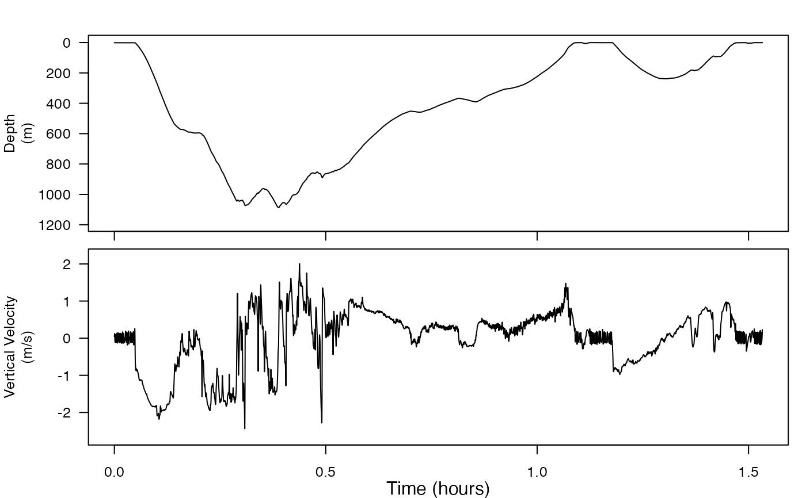

This function is used to estimate the vertical velocity by differentiating a depth or altitude time series. A low-pass filter reduces the sensor noise that is amplified by the differentiation.
Arguments
- p
A vector of depth or altitude data, or an animaltags list object containing depth or altitude data.
- fs
(required only if p is a vector) is the sampling rate of p in Hz.
- fc
(optional) A smoothing filter cut-off frequency in Hz. If fc is not given, a default value is used of 0.2 Hz (5 second time constant).
- depth
(optional) The behavior of animals. Required only if dealing with animals not behave descent but ascent.
Value
v, The vertical velocity with the same sampling rate as p. v is a vector with the same dimensions as p. The unit of v depends on the unit of p. For example, if p is in meters, v is in meters/second
Note
The low-pass filter is a symmetric FIR with length 4fs/fc. The group delay of the filters is removed. Usually, the function handles data pertaining to diving animals, where data is measured as the depth beneath the water surface. For ascending data coming from birds and alike data, setting depth = FALSE will help calculating the right vertical velocity.
Examples
v <- depth_rate(p = beaked_whale$P)
plott_base(list(beaked_whale$P$data, v),
fs = beaked_whale$P$sampling_rate,
r = c(1, 0), panel_labels = c("Depth\n(m)", "Vertical Velocity\n(m/s)")
)
